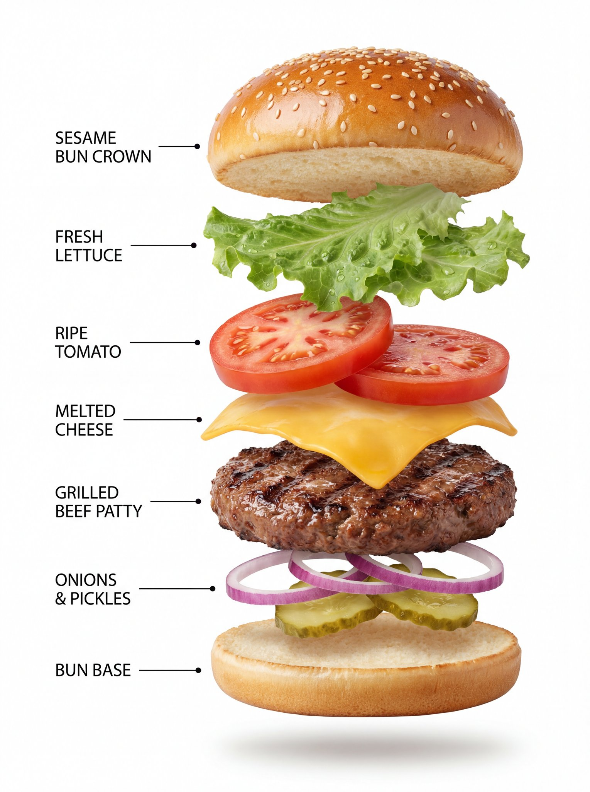

🎬 视频生成提示词
精选 8 个视频生成案例
案例571: 拟人橙色虎斑猫厨师在火焰中炫技炒虾仁炒饭
高度真实的特写镜头，拟人橙色虎斑猫厨师在火焰中翻炒虾仁炒饭，背景的副厨显得沮丧而震撼，画面呈现专业厨房的亮灯与不锈钢环境。
🎨 查看AI提示词
🇨🇳 中文提示词
一个高度逼真、特写、电影感的镜头，展示一只拟人化的橙色虎斑猫，身穿一尘不染的白色厨师帽和围裙，在专业的燃气灶上，激烈而凶猛地炒着虾仁炒饭。 这只猫后腿站立，手持一个大型金属锅铲和刮刀，动作充满强烈、专注的狂怒。燃气灶的火焰环绕着炒锅，蒸汽戏剧性地升腾。 背景中，略微模糊，可以看到一位穿着黑色制服的沮丧的副厨师长，双手高举，做出烦躁和沮丧的姿势，直视着那只猫。厨房一尘不染，是全不锈钢的。...
🇬🇧 English Prompt
Prompt: A highly realistic, close-up, cinematic shot of an anthropomorphic orange tabby cat in a pristine white chef's toque and apron, vigorously and aggressively stir-frying shrimp fried rice in ...

案例556: Kling AI 与 Gemini Nano Banana Pro：汉堡信息图
展示汉堡在缓慢旋转中层层分离的精确运动提示，配以两张高质感视觉作品：一张专业产品照，一张超真实的爆炸式信息图，均以纯白背景呈现。
🎨 查看AI提示词
🇨🇳 中文提示词
动作提示：汉堡开始缓慢、平稳地旋转，其各层逐一分离开来，保持完美的对齐、间距和比例。每个配料以精确、受控的运动飘散开来。运动干净利落，流畅自然，没有额外的效果或干扰。 图片 1 :- 一张高质量的、专业的产品照片，展示一个酥脆的香辣汉堡，配有金黄酥脆的炸鸡排、新鲜的生菜和柔软的芝麻面包。汉堡看起来多汁且堆叠整齐，可见纹理和酥脆感。极简风格，在纯色纯白的背景下拍摄，带有柔和的自然阴影。8K 分...
🇬🇧 English Prompt
Kling AI + Gemini Nano Banana Pro Motion Prompt: The burger begins a slow, smooth rotation while its layers gently separate one by one, maintaining perfect alignment, spacing, and scale. Each ingr...
案例532: 用Krea_ai打造震撼的Veo3汽车组装动画 JSON提示详解
本文分享由Krea_ai制作的Veo3汽车组装动画的详细JSON提示，涵盖场景、动作、特效和摄影细节，展现动态、爆发力十足的视觉效果，适合影视特效和创意设计爱好者参考。
🎨 查看AI提示词
🇨🇳 中文提示词
{ "shot": { “构图”：“英雄般的广角镜头，画面中央是空旷的沥青路面，福特野马从无到有地出现”， “镜头”: “24mm 变形镜头” "frame_rate": "60fps", "camera_movement": "快速旋转圆圈，在主要组装时刻猛烈推进，快速摇摄过渡" }, “主题”： { “描述”：“福特野马车一点一点地成型——底盘、发动机、车架、面板、车轮、车灯—...
🇬🇧 English Prompt
{ "composition": "hero wide shot with empty asphalt center frame where the Ford Mustang builds itself from nothing", "lens": "24mm anamorphic", "frame_rate": "60fps", "camera_movem...
案例516: 黎明时分大型造船厂的工业场景震撼呈现
描绘黎明时分大规模造船厂中起重机同步移动集装箱的壮观场景，镜头逐渐揭示工人、引擎声和海鸥声，展现史诗级工业电影风格的逼真画面。
🎨 查看AI提示词
🇨🇳 中文提示词
起重机到地面的过渡，黎明时分的大型造船厂，起重机同步移动集装箱，摄像机下降揭示穿着橙色制服的工人，引擎声、海鸥声和钢索的紧张声，淡金色光照，史诗工业电影现实主义风格。
🇬🇧 English Prompt
Crane-to-ground transition, large shipyard at dawn as cranes move containers in sync, camera descends revealing workers in orange suits, sound of engines, seagulls, and steel tension cables, pale gold...
案例511: 怀旧90年代客厅复刻：8秒重现《鸭 Hunt》游戏场景
这段8秒的视频还原了90年代客厅的经典场景，展示了《鸭 Hunt》游戏的怀旧氛围，包括复古CRT电视、NES主机、怀旧道具和经典像素画面，唤起童年记忆。
🎨 查看AI提示词
🇨🇳 中文提示词
{ "prompt": { "description": "创建一个 8 秒的视频，捕捉一个怀旧的 90 年代客厅设置，用于玩 Duck Hunt 视频游戏。" "场景": { "场景设定": "一个 90 年代客厅，摆放着木质支架上的复古 CRT 电视，显示着 Duck Hunt 的起始画面，画面中有像素化的鸭子和草地。", "游戏机": "任天堂娱乐系统（NES），灰色，...
🇬🇧 English Prompt
"prompt": { "description": "Create an 8-second video capturing a nostalgic 90s living room setup for playing the Duck Hunt video game.", "scene": { "setting": "A 90s living room with ...
案例507: 电影级直升机激烈追逐场景全景解析
本文详细描述了一场在峡谷中进行的高速直升机追逐的场景，从动态摄像、视觉特效到音效布局，展现了紧张刺激的战争氛围，视觉与听觉效果高度结合。
🎨 查看AI提示词
🇨🇳 中文提示词
{ "shot": { "构图": "从领航直升机后方进行动态跟踪拍摄，扫过狭窄的峡谷转弯处", "镜头": "长焦镜头，景深浅", "帧率": "24fps", "摄像机运动": "快速空中摇摄，伴随突然的平移和倾斜以跟随追逐" }, "subject": { "description": "两架军用攻击直升机正在峡谷中进行高速追逐", "wardrob...
🇬🇧 English Prompt
Grok JSON promptGrok JSON{ "shot": { "composition": "dynamic tracking shot from behind the lead helicopter, sweeping through tight canyon turns", "lens": "telephoto lens with shallow dept...
案例502: 电影级极速追逐：黑色欧洲跑车在山间公路激烈超车
一段炫酷的高速追逐视频，展现两辆现代欧洲跑车在风景优美的山路上激烈超车，配合专业的摄像和极致的视觉效果，营造出速度与激情的极致体验。
🎨 查看AI提示词
🇨🇳 中文提示词
一场充满活力的高速追逐，两辆现代黑色欧洲运动轿跑车（如宝马 M4 或类似车型）在风景秀丽、蜿蜒的山区公路上驰骋。该剪辑聚焦于后车积极超越前车的那一刻。动作应该让人感觉快速、有力和令人振奋。 相机移动（关键）： * 开始（0-2 秒）：从紧紧抓住尾随汽车（图像中最靠近摄像头的那个）的后保险杠和发光的 LED 尾灯的低角度、激进的跟踪镜头开始。以强烈的运动模糊显示下面冲刺的道路。 * 中序（2-...
🇬🇧 English Prompt
Veo-3.1 Fast in A dynamic, high-speed chase featuring two modern, black European sports coupes (like a BMW M4 or similar), racing down a scenic, winding mountain highway. The clip focuses on the momen...
案例403: 鹿竟在夜晚舞出TikTok挑战，萌态十足
一段夜间行车记录仪捕捉到两只鹿在乡村道路上表演搞笑舞蹈，宛如提前开启了TikTok挑战，引发网友热议。视频展现了动物的趣味互动与自然之美，结合逼真的夜景和幽默氛围。
🎨 查看AI提示词
🇨🇳 中文提示词
我发誓这些鹿在我们看到它 之前就开始了 TikTok 挑战 在 @BasedLabsAI 上使用 Veo 3.1 制造 { “prompt”： “乡村道路上的夜间行车记录仪视频。汽车前灯显示两只鹿面对面地站在路中间。突然，一只鹿开始跳起有趣的舞蹈，在路上有节奏地跺脚。另一只鹿看起来很惊讶，然后加入了夸张的头部动作。几秒钟后，两只鹿都僵住了，盯着镜头，仿佛被抓住了。视频应持续 8...
🇬🇧 English Prompt
I swear these deer started a TikTok challenge before we even saw it Made with Veo 3.1 on @BasedLabsAI { "prompt": "A night-time dashcam video on a rural road. The car headlights reveal two d...